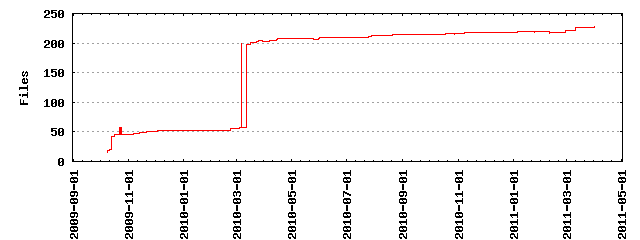

Files
- Total files
- 350
- Total lines
- 73913
- Average file size
- 21118.00 bytes

| Extension | Files (%) | Lines (%) | Lines/file |
|---|
| 12 (3.43%) | 1825 (2.47%) | 152 |
| cache | 1 (0.29%) | 56 (0.08%) | 56 |
| css | 10 (2.86%) | 1915 (2.59%) | 191 |
| dat | 10 (2.86%) | 877 (1.19%) | 87 |
| default | 1 (0.29%) | 104 (0.14%) | 104 |
| gif | 4 (1.14%) | 6 (0.01%) | 1 |
| html | 71 (20.29%) | 7538 (10.20%) | 106 |
| ico | 1 (0.29%) | 7 (0.01%) | 7 |
| jpg | 10 (2.86%) | 102 (0.14%) | 10 |
| js | 15 (4.29%) | 11391 (15.41%) | 759 |
| kml | 1 (0.29%) | 14 (0.02%) | 14 |
| mo | 2 (0.57%) | 18 (0.02%) | 9 |
| php | 87 (24.86%) | 27320 (36.96%) | 314 |
| plot | 10 (2.86%) | 118 (0.16%) | 11 |
| png | 13 (3.71%) | 245 (0.33%) | 18 |
| po | 2 (0.57%) | 226 (0.31%) | 113 |
| rss | 1 (0.29%) | 146 (0.20%) | 146 |
| sh | 2 (0.57%) | 24 (0.03%) | 12 |
| svn-base | 88 (25.14%) | 20600 (27.87%) | 234 |
| svn/format | 3 (0.86%) | 3 (0.00%) | 1 |
| txt | 3 (0.86%) | 1418 (1.92%) | 472 |
| xml | 2 (0.57%) | 226 (0.31%) | 113 |